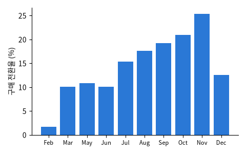

UCI (Sakar et al., 2019), 온라인 쇼핑몰 방문 세션 12,330건 (1년, 사용자당 1세션)

| Administrative | ProductRelated | ProductRelated_Duration | BounceRates | PageValues | Month | VisitorType | Revenue |
|---|---|---|---|---|---|---|---|
| 0 | 74 | 3,109.4 | 0.009459 | 0 | Nov | Returning_Visitor | False |
| 16 | 113 | 8,041.6 | 0.007937 | 0 | Dec | Returning_Visitor | False |
| 9 | 73 | 1,606.3 | 0.0103 | 0 | Nov | Returning_Visitor | False |
| 0 | 2 | 0 | 0.2 | 0 | Nov | Returning_Visitor | False |
| 0 | 1 | 0 | 0.2 | 0 | May | Returning_Visitor | False |
| 1 | 248 | 7,446.0 | 0.004316 | 1.267 | Nov | Returning_Visitor | True |
| 열 | 종류 | 빈칸 | 고유값 수 | 범위 · 대표값 |
|---|---|---|---|---|
| Administrative | 숫자 | 0 | 27 | 0 ~ 27 (평균 2.315) |
| Administrative_Duration | 숫자 | 0 | 3335 | 0 ~ 3,398.8 (평균 80.82) |
| Informational | 숫자 | 0 | 17 | 0 ~ 24 (평균 0.5036) |
| Informational_Duration | 숫자 | 0 | 1258 | 0 ~ 2,549.4 (평균 34.47) |
| ProductRelated | 숫자 | 0 | 311 | 0 ~ 705 (평균 31.73) |
| ProductRelated_Duration | 숫자 | 0 | 9551 | 0 ~ 63,973.5 (평균 1,194.7) |
| BounceRates | 숫자 | 0 | 1872 | 0 ~ 0.2 (평균 0.0222) |
| ExitRates | 숫자 | 0 | 4777 | 0 ~ 0.2 (평균 0.0431) |
| PageValues | 숫자 | 0 | 2704 | 0 ~ 361.8 (평균 5.889) |
| SpecialDay | 숫자 | 0 | 6 | 0 ~ 1 (평균 0.0614) |
| Month | 글자 · 범주 | 0 | 10 | 가장 흔한 값: May (27.3%) |
| OperatingSystems | 숫자 | 0 | 8 | 1 ~ 8 (평균 2.124) |
| Browser | 숫자 | 0 | 13 | 1 ~ 13 (평균 2.357) |
| Region | 숫자 | 0 | 9 | 1 ~ 9 (평균 3.147) |
| TrafficType | 숫자 | 0 | 20 | 1 ~ 20 (평균 4.07) |
| VisitorType | 글자 · 범주 | 0 | 3 | 가장 흔한 값: Returning_Visitor (85.6%) |
11월이 가장 높다 (연말 쇼핑)
산 방문은 PageValues 가 0 이 아닌 경우가 대부분. 이 값을 방문 도중에 알 수 있을까?
| ① 한 행 | 방문 세션 하나 |
| ② 입력 X | 본 페이지 수 · 머문 시간 · 이탈률 · 월 · 방문자 유형 … |
| ③ 출력 y | 구매했나 (Revenue) |
| ④ 평가지표 | 정밀도 · 재현율 |
| ⑤ 기준선 | 아무도 안 산다 |
문제를 정할 때 처음 채워 보는 칸들입니다. 여기서 끝이 아니라, 시험 데이터를 어떻게 나눌지 · 틀렸을 때 손해가 얼마인지 · 예측 시점에 정말 알 수 있는 값인지 같은 칸을 더 붙일수록 좋은 문제가 됩니다.
nobody buys accuracy 84.5% precision 0% recall 0% with PageValues accuracy 90.1% precision 73% recall 57% without PageValues accuracy 84.2% precision 46% recall 12%
누가, 왜, 어떻게 만든 데이터인지 직접 확인해 보세요.
인턴 · 산학협력 · 프로젝트 주제를 고를 때 참고하세요 (일반적인 예시).